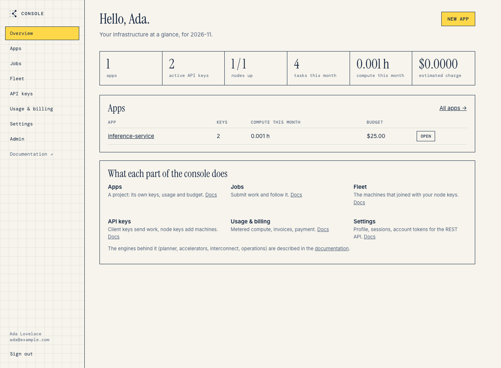
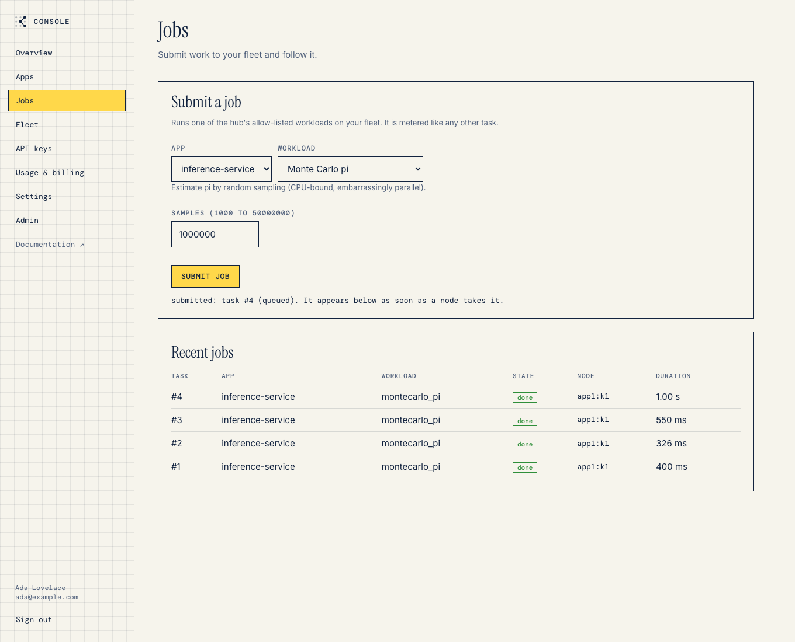
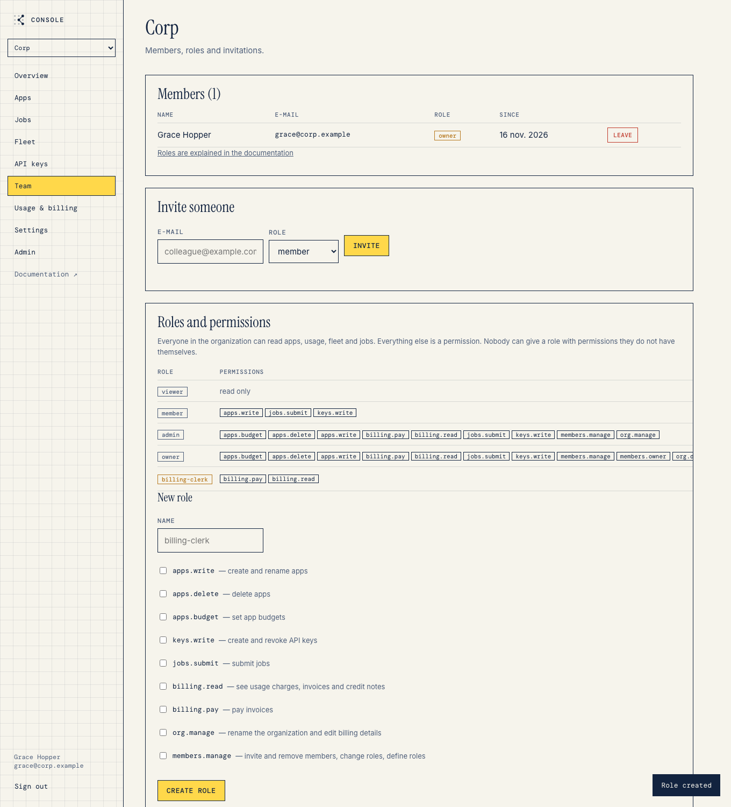

Console and accounts
Sign up, create apps linked to the infrastructure, get API keys, send jobs, watch usage, pay for what you use.
The five steps
- Create an account (e-mail and password). A free monthly allowance is included.
- Create an app from the Overview. An app is a project: its own tenant id on the fleet, its own keys, usage and optional monthly budget.
- Create an API key: a client key sends work and reads results; a node key lets a machine join the fleet. The key is shown once.
- Connect a machine:
spatial agent --hub HUB --token-file node.tok. It appears in Fleet within seconds. - Run a job from Jobs (or
spatial fleet submitwith a client key). Usage is metered per finished task and billed monthly.
The Overview shows these steps as a checklist and ticks them from what really exists on the hub.
The console, page by page
| Page | What it is for |
|---|---|
| Overview | The checklist, apps, active keys, nodes up, tasks and compute this month, estimated charge |
| Apps | One page per app with tabs: Overview (usage chart, recent tasks), Keys, Connect (CLI and Python snippets with your hub address), Jobs, Settings (name, budget, delete) |
| Jobs | Submit one of the hub's allow-listed workloads with its parameters, follow queued, running and finished jobs |
| Fleet | The machines that joined with your node keys (status, cores, CPU, RAM), queue counts, how to add a machine |
| API keys | Every hub credential of your apps; create, copy once, revoke |
| Team | Members, roles, invitations and the organization's name; the switcher at the top of the sidebar changes organization |
| Usage & billing | This month by app, free allowance, price per compute hour, tax, numbered invoices with PDF, payment, billing details (admins and owners) |
| Settings | Profile, Security (two-factor sign-in, password, active sessions), Account tokens for the REST API, Activity, Data (export, delete account) |
| Admin | First account only: users, platform totals, hub status, prices and tax, company details for invoices, e-mail status and test, mail queue |
Teams and roles
Everything (apps, keys, jobs, usage, invoices) belongs to an organization. Every account has a personal workspace with one member; create an organization to work with others and invite them by e-mail (the invitation is for one address, single use, valid seven days).
| Role | Can |
|---|---|
| viewer | See apps, usage, fleet and jobs |
| member | + create apps, API keys and jobs; rename apps |
| admin | + invite and remove members, set budgets, delete apps, see billing, pay, edit billing details |
| owner | + appoint owners, delete the organization. At least one owner always remains |
Behind the four built-in roles there are permissions (apps.write, apps.delete, apps.budget, keys.write, jobs.submit, billing.read, billing.pay, org.manage, members.manage; org.delete and members.owner stay with owners). On the Team page you can define up to ten custom roles (for example a billing-clerk who sees invoices and pays them but cannot touch apps). One rule closes the escalation hole: nobody can create or hand out a role containing a permission they do not hold themselves.





API keys and account tokens: two different things
| API key | Account token | |
|---|---|---|
| Used with | The hub (SWP/2): spatial agent, spatial fleet, any client | The console REST API (reference): scripts that create apps, keys, read usage |
| Looks like | spc1.…~… (a scoped hub credential named app7:k3) | spt_… |
| Scopes | client: fleet:submit, fleet:read. node: fleet:report, fleet:work | read (GET only) or write |
| Shown | Once, at creation; only the last 4 characters are kept | Once; only a hash is kept |
| Revocation | At once, on the running hub (a revoked-names file it re-reads) | At once |
How it is wired to the infrastructure
| In the console | On the hub |
|---|---|
| An app | The tenant app7: fair share, queue and quotas apply to it |
| A key | A credential app7:k3 signed with the hub's master key |
| A machine in Fleet | A node whose identity is its node key |
| A job | A task submitted with a short-lived client credential of the app |
| Usage | One line per finished task in the hub's usage file, read incrementally |
Account security
- Passwords hashed with scrypt; same message and same work for unknown and known accounts; five wrong passwords lock the account for 15 minutes; sign-ups, logins, resets and API calls are rate-limited (600 requests a minute per user, 120 per token).
- Two-factor sign-in (Settings, Security): a code from any authenticator app (TOTP, RFC 6238) after the password; eight single-use recovery codes shown once; a code works once; five tries per sign-in attempt; turning it off needs the password and a code and ends every session.
- E-mail verification: new accounts get a link; when the server can send e-mail, API keys, jobs and organizations need a verified address (the operator account is exempt). Without SMTP it is not enforced, because nobody could verify.
- Sessions: HttpOnly, SameSite=Strict (Secure behind TLS) cookie, CSRF token and same-origin check on every change; list and end sessions; changing the password ends the others. Tokens are bearer credentials without cookies, so no CSRF; a token cannot create tokens, change the password or delete the account.
- Isolation: a user sees only organizations they belong to; asking for another organization's data gives the same answer as for something that does not exist. Strict content security policy: no inline script or style.
- Binds to 127.0.0.1 unless you explicitly allow remote access: put TLS in front (the compose file uses Caddy).
Single sign-on
If the operator configures an OpenID Connect provider (Google, Microsoft Entra, Okta, Keycloak…; --oidc-issuer, --oidc-client-id, OIDC_CLIENT_SECRET), the sign-in page shows Sign in with …. The flow is the authorization code with PKCE; the ID token is verified here (RS256 signature against the provider's keys, issuer, audience, expiry, nonce, confirmed e-mail), the state is single use and expires in ten minutes, and the operator can limit it to some e-mail domains or to existing accounts. A user who turned on two-factor sign-in still has to give the code. SAML is deliberately not built in: put an OpenID Connect broker (Dex, Keycloak) in front of your SAML provider. This flow is tested against a real provider (Dex).
Billing, tax and invoices
The operator sets prices in Admin (price per compute hour, free monthly allowance, minimum invoice, currency) and tax (a default rate, rates by customer country, optional simplified reverse charge for a customer with a VAT id abroad). Prices apply from then on; invoices already issued keep the prices they were issued with. Organizations enter their billing details (name, address, country, VAT id): a VAT id is checked for format for the EU, UK, Switzerland and Norway and for the check digit where the algorithm is public (AT, BE, DE, DK, FR, IT, PL, PT), and optionally against the European Commission's VIES service; the console says which check passed. The operator can issue credit notes (numbered CN-2026-00001, with PDF, tax credited at the invoice's rate): an unpaid invoice shrinks; for a paid one the refund goes through Stripe when the payment is known, otherwise the note is marked refund due. Admin warns about what is missing before you invoice (company name, address, VAT id, country). At the end of a month with usage an invoice is created with a gap-free number (INV-2026-00001), subtotal, tax and total, and can be downloaded as PDF; amounts under the minimum are waived and get no number. Payment goes through Stripe Checkout when STRIPE_SECRET_KEY is set, and an invoice is marked paid only by Stripe's signed webhook; without Stripe the console shows invoices and refuses to charge.
Until the operator saves real prices, the console says plainly that it is using example prices.
Messages (verification, invitations, password reset) go through a queue: delivered over SMTP (--smtp-host, STARTTLS or implicit TLS) and retried with growing delays when the server is down; without SMTP they stay visible in Admin. Admin has a test-message button.
Run and deploy
Locally: spatial platform serve (see the panel). On a server: docker compose --env-file deploy/.env up -d --build starts the hub, the console and automatic HTTPS (docs/DEPLOY.md).